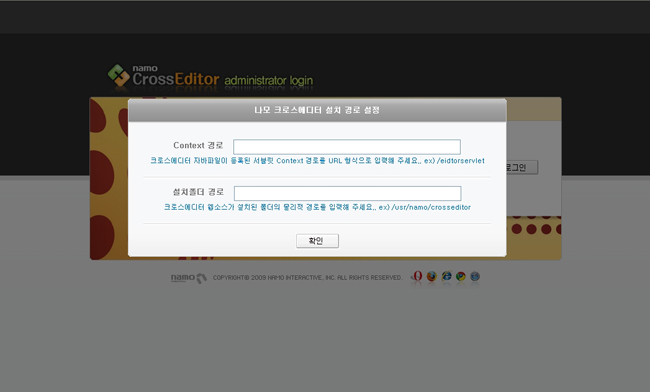
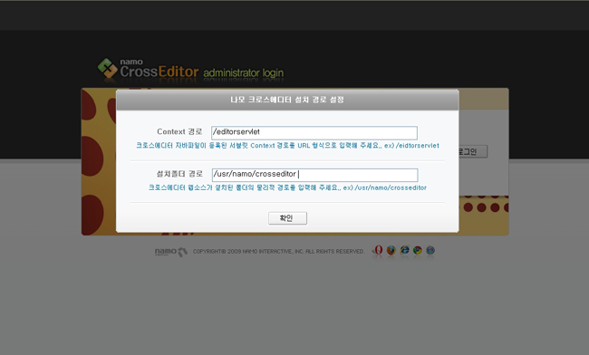
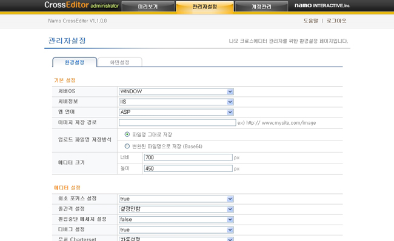
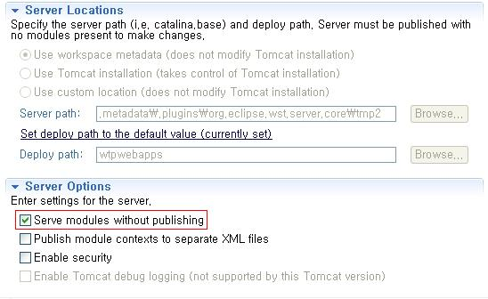

CrossEditor
설치 사양
| 지원 운영체제 |
|
|---|---|
| 지원 HTML |
|
| 지원 웹 언어 |
|
| 지원 웹 서버 |
|
설치 방법
반드시 순서대로 적용하시길 바랍니다.
단일 서버가 아닌 경우 다중 서버 가이드도 같이 참조하셔야 합니다.
1. 서버 가이드 적용
2. 파일 권한 설정
크로스에디터는 파일 쓰기를 통하여 관리자에서 설정된 내용을 저장하고 있습니다.
아래의 경로에 해당 파일이 존재하는 경우 쓰기 권한을 추가 합니다.
- 파일명
-
- 크로스에디터 설치 폴더/manage/asp/manageInfo.asp
- 크로스에디터 설치 폴더/manage/jsp/manageInfo.jsp
- 크로스에디터 설치 폴더/manage/php/manageInfo.php
- 크로스에디터 설치 폴더/config/xmls/Config.xml
3. 웹 언어별 설정
ASP
IIS(인터넷 정보 서비스) 관리자 설정에서 ASP 옵션의 "부모 경로 사용"을 "true"로 변경합니다.
ASP.NET
크로스에디터는 ASP.NET 버전의 관리자 페이지를 제공하지 않고 ASP 버전의 관리자를 사용합니다.
IIS(인터넷 정보 서비스) 관리자 설정에서 ASP가 동작할 수 있도록 설정해 주세요.
IIS(인터넷 정보 서비스) 관리자 설정에서 ASP 옵션의 "부모 경로 사용"을 "true"로 변경합니다.
PHP
php.ini 환경설정 파일의 "allow_url_fopen"을 "on"으로 변경합니다.
JSP
cos.jar 파일을 설치합니다. (다운로드 사이트 : http://servlets.com/cos/)
SERVLET
1. classpath에 추가
"크로스에디터 설치 폴더/websource/servlet/classes"로 이동합니다.
- "classes" 폴더를 "$WebApplication_Root/WEB-INF/"로 복사합니다.
- "lib" 폴더를 "$WebApplication_Root/WEB-INF/"로 복사합니다.
- "$WebApplication_Root/WEB-INF/"의 "web.xml"에 servlet mapping을 추가합니다.
(톰캣 기준)
<servlet>
<servlet-name>CrosseditorServlet</servlet-name>
<display-name>CrosseditorServlet</display-name>
<description></description>
<servlet-class>
com.namo.crosseditor.controller.CrosseditorServlet
</servlet-class>
</servlet>
<servlet-mapping>
<servlet-name>CrosseditorServlet</servlet-name>
<url-pattern>/CrosseditorServlet</url-pattern>
</servlet-mapping>
2. 관리자 페이지 접속
"크로스에디터 설치 폴더 URL/manage/index.html"로 접속하면 아래와 같은 화면이 나옵니다.
Context 경로 입력란에는 SERVLET을 접속할 수 있는 Context 경로를 URL 형식으로 입력 합니다.
예를 들어 SERVLET을 접속 할 수 있는 URL이 "http://www.test.co.kr/crosseditor"인 경우 "/crosseditor"를 입력해 주시면 됩니다.
설정된 Context 경로가 없을 경우 "/"만 입력합니다.
설치 폴더 경로 입력란에는 크로스에디터가 설치된 물리적 경로를 입력합니다.
배포 시 지급된 관리자 아이디와 비밀번호로 로그인한 후 관리자 설정 화면이 제대로 나타나는지 확인합니다.
* 이미지 경로 설정
기본적으로 제공하는 이미지 저장 경로가 아닌 다른 이미지 저장 경로를 설정할 때 이미지가 저장될 서버의 물리적 경로와 물리적 경로에 접근 할 수 있는 URL 경로를 적어 주어야 합니다.
두 가지 정보를 모두 입력해야 정상적으로 입력이 됩니다.
이미지 저장 URL 경로는 Full URL이나 절대 경로를 입력 하시면 됩니다.
3. 이클립스에서 Server 사용 시
Server의 환경설정 페이지를 엽니다.
"Serve modules without publishing"을 체크해 주시길 바랍니다.
"Serve modules without publishing"을 선택하지 않았을 경우 temp파일을 이용하여 구동되기 때문에 실제 저장되는 경로와 동작하는 경로가 불일치가 나 정상적으로 크로스에디터가 동작하지 않을 수 있습니다.
페이지에 삽입
1. DOCTYPE 지정
에디터를 삽입할 페이지의 소스에 문서 형식(DOCTYPE)을 지정합니다.
※ 문서 형식을 지정하지 않으면 에디터의 UI나 동작이 정상적이지 않을 수 있습니다.
2. 스크립트 추가
"<head></head>" 태그 사이에 아래의 코드를 추가합니다.
<script type="text/javascript" src="크로스에디터 설치 폴더 URL/js/namo_scripteditor.js"></script>
"<body>" 태그 안쪽의 에디터가 들어갈 위치에 에디터 생성 코드를 삽입 합니다.
<script type="text/javascript">
var CrossEditor = new NamoSE("임의의 이름");
CrossEditor.EditorStart();
</script>
에디터 설정
"크로스에디터 설치 폴더 URL/manage/index.html"로 접속하면 아래와 같은 화면이 나옵니다.

배포 시 지급된 관리자 아이디와 비밀번호로 로그인하면 아래와 같은 화면이 나옵니다.

설치 시스템에 맞게 원하는 값을 입력 후 하단의 저장 버튼을 클릭합니다.
※ 서버OS와 서버정보 부분은 에디터 설치 환경 정보를 나타태기 위한 값일 뿐 에디터 동작에는 전혀 영향을 주지 않습니다.
삭제 방법
SERVLET
- 크로스에디터 설치 폴더를 삭제합니다.
- "$WebApplication_Root/WEB-INF/"의 "web.xml"에서 servlet mapping을 해지합니다.
- "$WebApplication_Root/WEB-INF/lib" 폴더에서 다음 파일을 삭제합니다.
- crosseditor.jar
- cos.jar (다른 곳에서 사용하지 않는 경우에만)
- mail.jar (다른 곳에서 사용하지 않는 경우에만)
- "$WebApplication_Root/WEB-INF/classes" 폴더에서 다음 파일을 삭제합니다.
- EditorInformation(_Manager or _Intranet).properties
- manageInfo(_Manager or _Intranet).properties
- NamoCommand(_Manager or _Intranet).properties
ASP, ASP.NET, PHP, JSP
크로스에디터 설치 폴더를 삭제합니다.